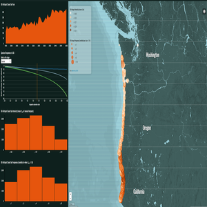
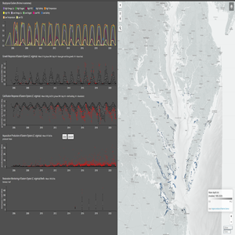
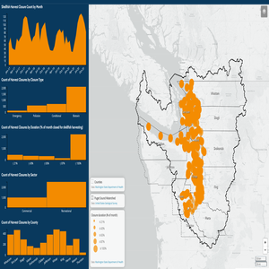
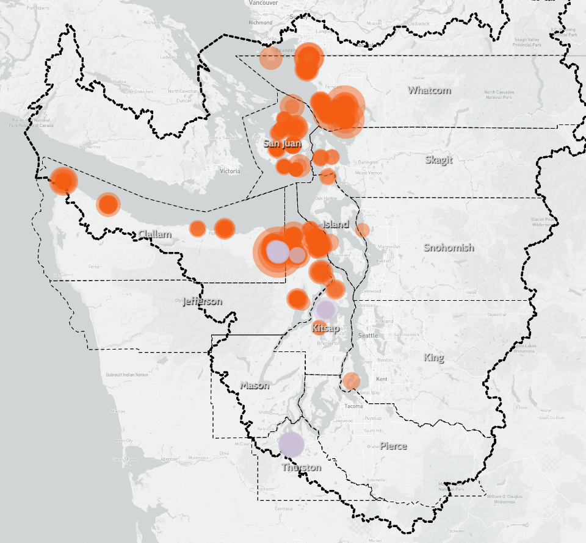
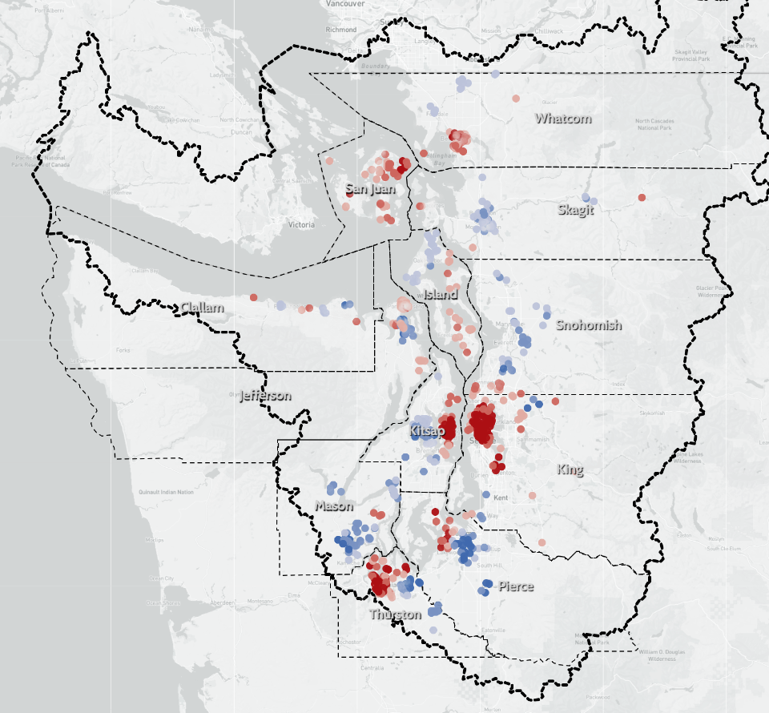
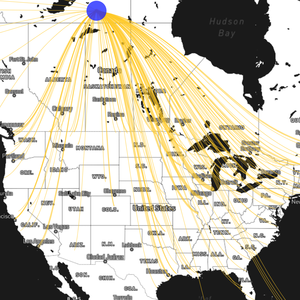

Brian G. Katz
Atlas of Web Maps
OA Mapping Tool
Mapping species responses to modeled ocean acidification hotspots in the Pacific Northwest

OA Vulnerability
Assessing vulnerability of shellfish stakeholders to ocean acidification in the Pacific Northwest
OA Adaptation
Case study of successful adaptation to ocean acidification in the Pacific Northwest
OA Background
Background on shellfish-dependent livelihoods and ocean acidification in the Pacific Northwest
OA Exposure
Interannual OA extremes in the Pacific Northwest (Ω
ar
<=1.4)
S.T.A.R. Project
Shellfish thresholds and aquaculture resilience in Chesapeake Bay

Shellfish Harvest Closures
Mapping biotoxin samples and harvest frequencies in the Salish Sea

Shellfish Biotoxins
Mapping harvest closures and harvest frequencies in the Salish Sea

Human Wellbeing
Mapping subjective human wellbeing indicators in the Salish Sea

Hurricane Harvey
Mapping Houston census tracts by exposure and adaptive capacity to flooding from Harvey
Real-time Tweet Stream
[site down]
Streaming global tweet locations on a map in near real-time
Vector Field Animation
Vector animation of raster data
U.S. Oil Imports
Flow map of petroleum product imports into U.S. ports in 2019

U.S. Airports
Map of airports with Albers projection
NYC
3D map of noise complaints in NYC